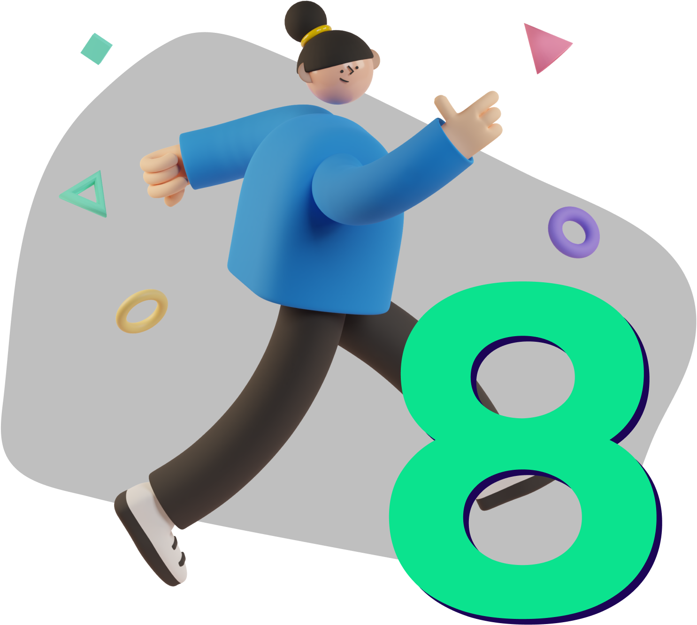

<div class="container-fluid bg-roxo-escuro py-50 text-light" id="sessao-ods">
  <div class="container">
    <div class="row justify-content-around align-items-center">

      <div class="col-md-6">
        
      </div>

      <div class="col-md-5">
        <div class="row">
          <div class="col-md-12">
            <h3 class="mb-4">Trabalho decente e <br>crescimento econômico</h3>

            <p>
              O projeto foi pautado a partir da ODS 8 da ONU que tem como intuito promover um turismo econômico e sustentável. 
              Dessa forma, o Conecta surgiu com o objetivo de interligar pessoas com pequenos estabelecimentos de turismo e cultura em diversas regiões do Brasil. 
            </p>

          </div>
        </div>
      </div>
    </div>
  </div>
</div>
